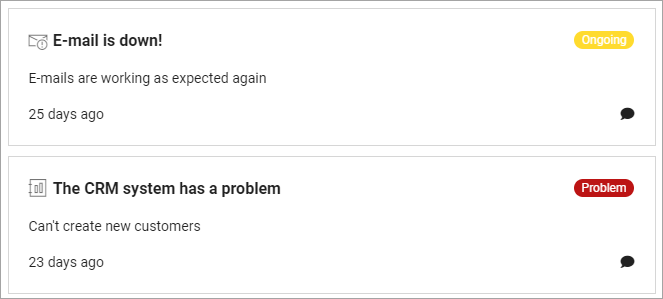
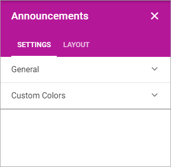
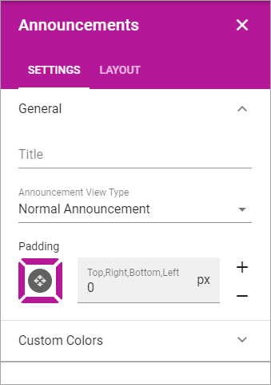

Announcements¶
Announcements are created by administrators and will display important information in the whole tenant, or for a certain business profile. The Priority (status) of an announcement can be Normal or High. Announcements can be displayed at the top, in the Notification panel, or in a block, which is what’s described here.
The end user experience¶
An announcement displayed in a block can look like this:
Commenting Announcements (will this work????)¶
If commenting is allowed for the Announcement (set indivually for each Announcement) any user can comment the announcement. It works the same way as commenting a publishing page, for example news. The number of comments for each message are shown in the list, for example:

To read or add comments, click “Comment(s)” and something like the following is shown:

Settings for the block¶
The following settings are available for the Announcements block:
Note that the Layout tab is general for all blocks. It’s described here: (A link will be added)
General¶
Here you can set the following:
- Title: Set a title to be displayed in the block.
- Announcement View Type: Select to display Normal Announcements or High Priority Announcements.
- Padding: Use this option to set some padding for the text within the block.
Custom Colors¶
Colors should be set centrally for consistency, but if needed, the following custom colors can be set here: